編輯器介紹
功能表個性功能簡介
| 樣式 | 功能 | 效果 |
|---|---|---|
| Choose heading | 段落 | 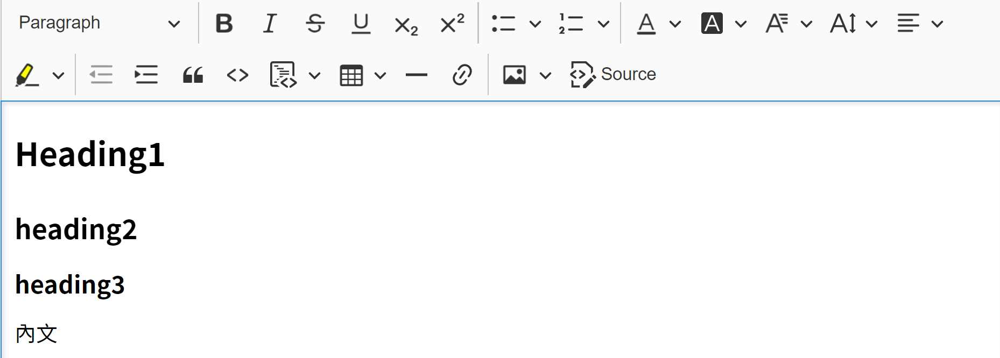 |
| 粗體 | ||
| 斜體 | 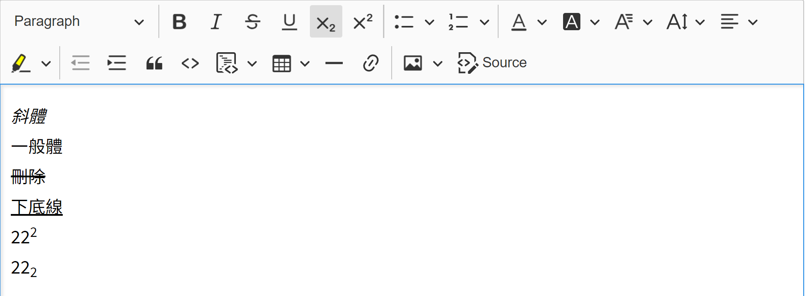 | |
| 刪除線 | 參考上圖 | |
| 下底線 | 參考上圖 | |
| 下標 | 參考上圖 | |
 |
上標 | 參考上圖 |
| 超連結 | ||
| 上傳圖片 |
|
|
| 符號清單 | 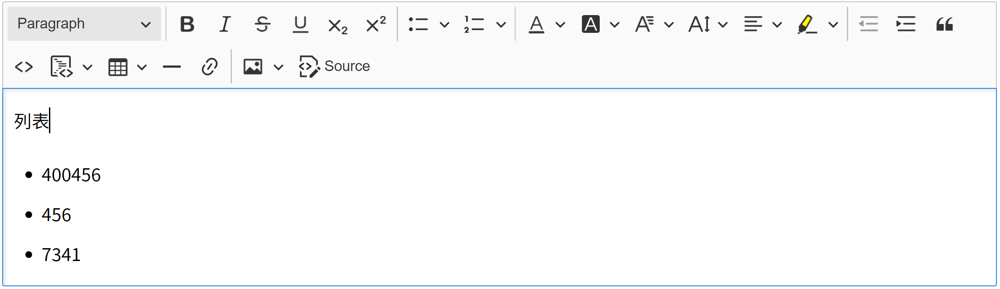 | |
| 數字清單 | 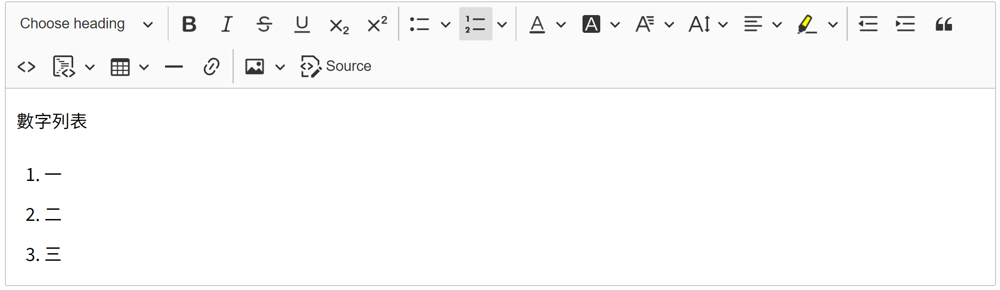 | |
| 文字顏色 | 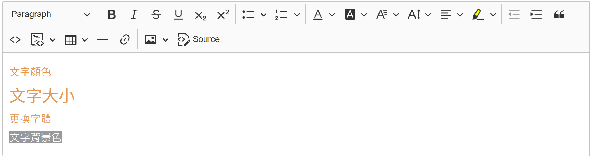 | |
| 文字底色 | 參考上圖 | |
| 字體 | 參考上圖 | |
| 字體放大 | 參考上圖 | |
| 文字對齊 | 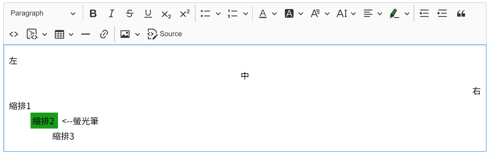 | |
| 螢光筆 | 參考上圖 | |
| 左縮排 | 參考上圖 | |
| 右縮排 | 參考上圖 | |
| 程式碼區塊 | 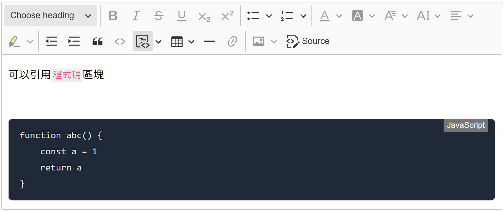 | |
| 程式碼區域 | 程式碼區塊可選擇語言。預覽與實際呈現時有程式碼高亮區塊 |
|
| 引用 | 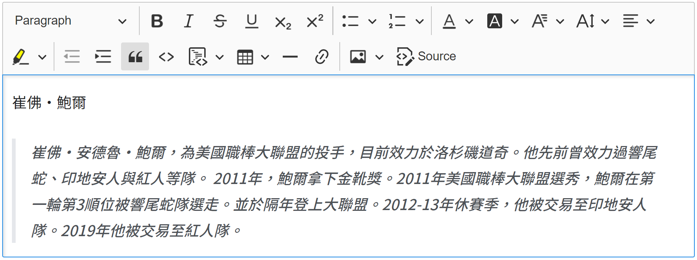 | |
| 表格 新增 | 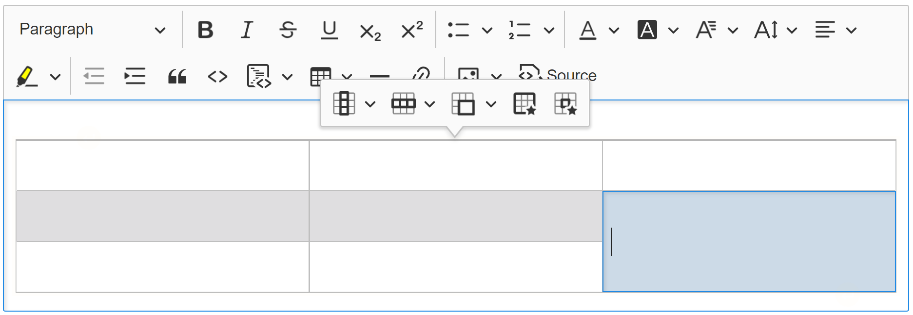 | |
| 表格 新增欄 | 參考上圖 | |
 |
表格 新增列 | 參考上圖 |
| 表格 合併欄位 | 參考上圖 | |
| 分隔線 | 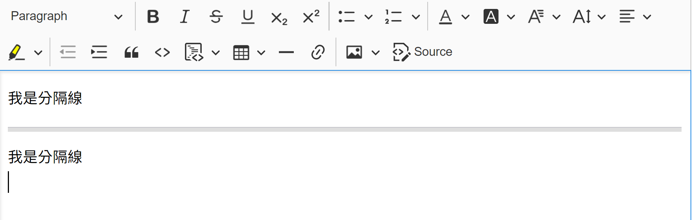 | |
| 圖片 靠左 | 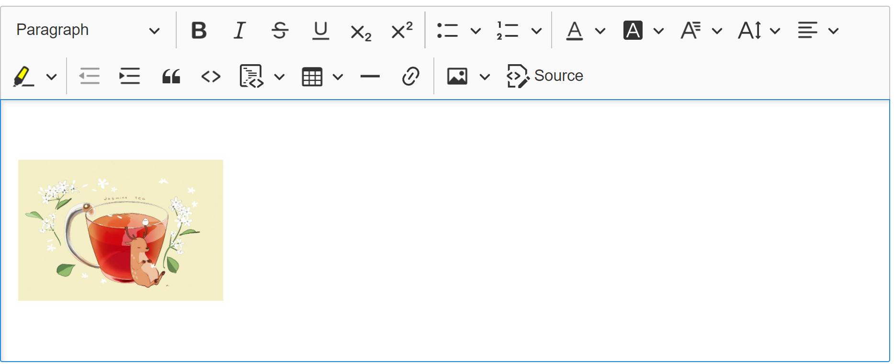 | |
| 圖片 靠右 | 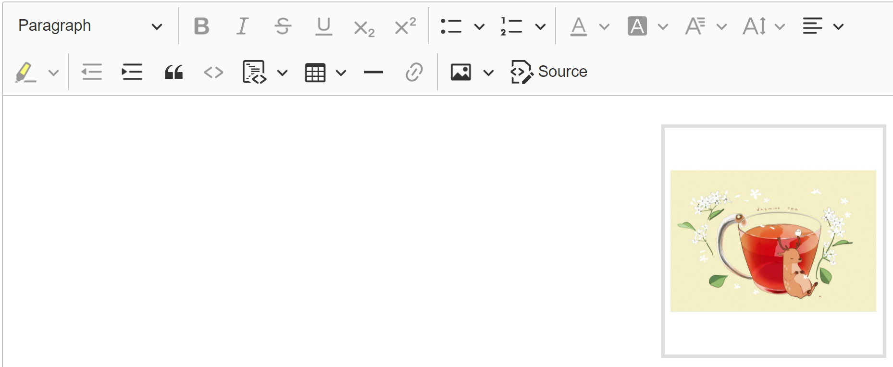 | |
| 圖片 置中 |